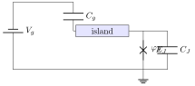
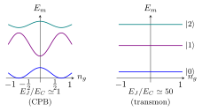
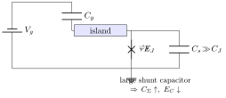
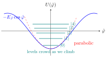

6 Superconducting qubits: from the Cooper pair box to the transmon
This chapter is the centre of mass of the course. We take the Josephson junction built in Chapter 4 (the only non-linear, dissipationless lumped element available in superconducting circuits) and embed it in the lumped-element framework of Chapter 3 to obtain an artificial atom whose two lowest levels can be addressed coherently as a qubit.
We follow the historical path. The Cooper pair box (CPB) of Nakamura et al. (1999) is the simplest charge qubit one can draw. It is also the canonical example of a circuit that is spoiled by charge noise, and understanding precisely why leads, by a single design choice, to the transmon of Koch et al. (2007). The transmon is the qubit we will couple to a microwave cavity in Chapter 6 — virtually every mainstream superconducting quantum processor today (IBM, Google, Rigetti, QuEra-Atomic, …) is built out of transmons.
The whole chapter is governed by a single Hamiltonian \[ \hat H_{\text{CPB}} \;=\; 4 E_C\,(\hat n - n_g)^2 \;-\; E_J\,\cos\hat\varphi, \tag{6.1}\] and the single dimensionless parameter \(E_J/E_C\) that controls its regime. The CPB and the transmon are two limits of Equation eq-cpb-master, not two different circuits.
6.1 The Cooper pair box (CPB)
6.1.1 Circuit
The CPB consists of a tiny superconducting island connected to a reservoir through a single Josephson junction (JJ), and capacitively coupled to an external gate voltage \(V_g\) through a gate capacitor \(C_g\) (see Figure fig-cpb-circuit). The JJ has its own self-capacitance \(C_J\), so the total capacitance seen by the island is \[ C_\Sigma \;=\; C_J + C_g. \] The gate voltage induces a continuous, classically controllable charge \(Q_g = C_g V_g\) on the island. The Josephson junction allows Cooper pairs, and only Cooper pairs (single-electron tunnelling is gapped out by the superconducting gap \(\Delta\)), to enter or leave the island in discrete units of \(2e\).

6.1.2 Lagrangian and Hamiltonian
We repeat the LC-quantisation routine of Chapter 3, taking the junction flux \(\Phi_J\) as the loop coordinate and writing \(\varphi = (2\pi/\Phi_0)\,\Phi_J\) for the dimensionless phase.
- Kinetic energy — the two capacitors store \[ T \;=\; \tfrac12\, C_J\,\dot\Phi_J^{\,2} \;+\; \tfrac12\, C_g\,(\dot\Phi_J - V_g)^2. \]
- Potential energy — only the junction contributes, \[ U \;=\; -E_J\cos\!\left(\tfrac{2\pi}{\Phi_0}\Phi_J\right) \;=\; -E_J\cos\varphi. \]
- Conjugate momentum. The Lagrangian \(\mathcal L = T - U\) gives a conjugate momentum that, up to the standard offset, is the total charge on the island, \[ Q \;=\; \frac{\partial \mathcal L}{\partial \dot\Phi_J} \;=\; C_\Sigma\,\dot\Phi_J - C_g V_g. \]
- Legendre transform. Solving for \(\dot\Phi_J = (Q + C_g V_g)/C_\Sigma\) and collecting, \[ H \;=\; \frac{(Q + C_g V_g)^2}{2 C_\Sigma} \;-\; E_J \cos\varphi. \]
The first term is the electrostatic charging energy with the gate offset built in. Counting charge in Cooper pairs and introducing the charging energy \[ \boxed{\,E_C \;=\; \frac{e^2}{2 C_\Sigma}\,} \] together with the dimensionless Cooper-pair number and offset charge \[ \hat n \;\equiv\; \hat Q / (2e), \qquad n_g \;\equiv\; C_g V_g / (2e), \] the Hamiltonian becomes the master equation Equation eq-cpb-master: \[ \hat H_{\text{CPB}} \;=\; 4 E_C\,(\hat n - n_g)^2 \;-\; E_J\cos\hat\varphi. \]
\(E_C = e^2/(2 C_\Sigma)\) is the electrostatic cost of putting one extra electron on the island. The factor of four in front of \((\hat n - n_g)^2\) converts it into the cost of one extra Cooper pair (\((2e)^2/(2 C_\Sigma) = 4 E_C\)). The Josephson energy \(E_J = \Phi_0 I_c/(2\pi)\) is the depth of the cosine washboard derived in Chapter 4.
6.1.3 Conjugate operators and the charge basis
\(\hat n\) and \(\hat\varphi\) are the canonical pair of the circuit. Starting from \([\hat\Phi_J,\hat Q] = i\hbar\) in the LC sector (Chapter 3) and using \(\hat\varphi = (2\pi/\Phi_0)\hat\Phi_J\) and \(\hat n = \hat Q/(2e)\), \[ [\hat\varphi,\hat n] \;=\; \frac{2\pi}{\Phi_0}\cdot\frac{1}{2e}\,[\hat\Phi_J,\hat Q] \;=\; \frac{2\pi}{\Phi_0\cdot 2e}\,i\hbar \;=\; i, \] since \(\Phi_0 = h/(2e)\). So \(\hat\varphi\) is the phase conjugate to the Cooper-pair number \(\hat n\), exactly as angle is conjugate to angular momentum.
- Charge basis. Eigenstates \(\hat n\ket n = n\ket n\) with \(n\in\mathbb Z\), labelling the number of excess Cooper pairs on the island.
- Phase basis. Eigenstates \(\hat\varphi\ket\varphi = \varphi\ket\varphi\) with \(\varphi\in[0,2\pi)\). The Fourier kernel is \(\braket{\varphi|n} = e^{in\varphi}/\sqrt{2\pi}\).
- Cosine as a hopping term. Writing \(\cos\hat\varphi = \tfrac12(e^{i\hat\varphi} + e^{-i\hat\varphi})\) and noting that \(e^{\pm i\hat\varphi}\ket n = \ket{n\pm 1}\) (because \(\hat\varphi\) is conjugate to \(\hat n\)), we obtain the charge-basis representation \[ \hat H_{\text{CPB}} \;=\; \sum_n 4 E_C(n - n_g)^2 \ket n\!\bra n \;-\; \tfrac{E_J}{2}\sum_n \bigl(\ket n\!\bra{n+1} + \ket{n+1}\!\bra n\bigr). \tag{6.2}\]
- Physical reading. The first piece is diagonal — the electrostatic cost \(E_C(2(n-n_g))^2/2\) of carrying \(2e(n-n_g)\) charge across \(C_\Sigma\). The second piece is a nearest-neighbour hopping in charge space — the coherent tunnelling of one Cooper pair through the junction, with amplitude \(E_J/2\).
6.1.4 Charge dispersion and the sweet spot (\(E_J \ll E_C\))
In the charge regime \(E_J \ll E_C\) the diagonal parabolas \(E_n(n_g) = 4 E_C (n - n_g)^2\) dominate; the Josephson term is a perturbation that mixes the parabolas only where they cross.
- Parabolas of the CPB. For each fixed \(n\), \(E_n(n_g)\) is a parabola in \(n_g\) with minimum at \(n_g = n\). Consecutive parabolas \(n\) and \(n+1\) intersect at the degeneracy point \(n_g = n + 1/2\).
- Near \(n_g = 1/2\). Restricting to \(\{\ket 0,\ket 1\}\) and dropping high-energy charge states (separated by \(\sim 8 E_C\)), Equation eq-cpb-charge collapses to the two-level Hamiltonian \[ \hat H_{2\times 2} \;=\; 4 E_C(n_g - \tfrac12)\,\hat\sigma_z \;-\; \tfrac{E_J}{2}\,\hat\sigma_x, \] with eigenvalues \(E_\pm = \pm\sqrt{\epsilon^2 + (E_J/2)^2}\), \(\epsilon = 4 E_C(n_g - 1/2)\).
- Avoided crossing. Exactly at \(n_g = 1/2\) the gap is \(\Delta E = E_J\) — the Josephson term lifts the charge degeneracy and the eigenstates become the symmetric/antisymmetric combinations \(\ket\pm = (\ket 0 \pm \ket 1)/\sqrt 2\). This is the spectral signature of coherent Cooper-pair tunnelling.
- Sweet spot. At \(n_g = 1/2\), \(\partial\omega_{01}/\partial n_g = 0\) to first order — the qubit frequency is first-order insensitive to gate noise. The CPB is operated exactly at this point. Away from it, \(\omega_{01}(n_g)\) varies linearly with \(n_g\) and any low-frequency charge fluctuation \(\delta n_g\) dephases the qubit.
Why charge noise kills the CPB. Microscopic two-level fluctuators in the substrate and gate dielectric continuously shift \(n_g\) by fractions of a Cooper pair. Even at the sweet spot, second-order sensitivity remains, and the device cannot be parked there indefinitely because tuning to other operating points is required for gates. This limits \(T_2\) to nanoseconds.
Remark (Mathieu equation). The full eigenproblem of Equation eq-cpb-master is a Mathieu equation in the phase basis: writing \(\hat n = -i\,\partial_\varphi\), the Schrödinger equation reads \[ \bigl[-4 E_C(\partial_\varphi + i n_g)^2 - E_J\cos\varphi\bigr]\psi \;=\; E\,\psi, \] whose Floquet–Mathieu solutions give Bloch bands \(E_m(n_g)\). We will not need the explicit Mathieu characteristic values — every regime we care about can be reached from one of the two natural perturbative expansions: small-\(E_J/E_C\) around the charge basis (this section), and large-\(E_J/E_C\) around a phase oscillator (§5.4).
6.2 From the CPB to the transmon
Numerically diagonalising Equation eq-cpb-master across a sweep of \(E_J/E_C\) produces the standard family of band diagrams (sketched in Figure fig-bands). Two trends are visible:
- Charge dispersion shrinks. The peak-to-peak amplitude \(\epsilon_m \equiv \max_{n_g} E_m(n_g) - \min_{n_g} E_m(n_g)\) of band \(m\) decreases monotonically with \(E_J/E_C\). For the qubit band \(m=1\) the asymptotic result of Koch et al. (2007) is the exponential suppression \[ \epsilon_1 \;\sim\; E_C\,2^{4}\sqrt{\tfrac{2}{\pi}} \Bigl(\tfrac{E_J}{2 E_C}\Bigr)^{\!3/4}\, e^{-\sqrt{8 E_J/E_C}}. \tag{6.3}\]
- Spectrum becomes more harmonic. The level spacings \(E_{m+1} - E_m\) approach the uniform value \(\sqrt{8 E_J E_C}\) predicted by the quadratic-in-\(\varphi\) truncation; anharmonicity, defined below, shrinks only algebraically.

6.2.1 Engineering choice
The transmon takes the same CPB Hamiltonian and operates it in the regime \(E_J/E_C \gg 1\). Experimentally one shunts the junction by a large interdigitated capacitor that raises \(C_\Sigma\) by orders of magnitude: \[ E_C \;=\; \frac{e^2}{2 C_\Sigma} \quad\xrightarrow{\;C_\Sigma\uparrow\;}\quad E_C\downarrow. \] A typical transmon sits at \(E_J/E_C \sim 50\text{--}100\), with \(E_J/h \sim 10\)–\(20\) GHz and \(E_C/h \sim 200\)–\(300\) MHz.

The transmon is not a new Hamiltonian — it is the CPB Hamiltonian Equation eq-cpb-master operated deep in the \(E_J/E_C \gg 1\) corner by a single circuit-level design choice (shunt capacitor).
6.3 Idea of the transmon
The transmon is a deliberate compromise. By driving \(E_J/E_C\) up one gains exponential insensitivity to charge noise (Equation eq-charge-dispersion) at the price of a more harmonic spectrum.
- Charge-noise insensitivity. \(\partial\omega_{01}/\partial n_g \to 0\) exponentially, so the qubit can be parked at any value of \(n_g\) — the sweet spot is everywhere.
- Residual anharmonicity. The next correction to the harmonic spectrum gives a small but finite anharmonicity \[ \alpha \;=\; \omega_{12} - \omega_{01} \;\simeq\; -\,E_C/\hbar, \] which we derive properly in §5.4. The relative anharmonicity \(\alpha/\omega_{01} \sim -\sqrt{E_C/8E_J}\) does decrease, but only as a square root — never fast enough to wash out.
- Operating window. Real-world transmons are tuned to \(|\alpha|/2\pi \sim 100\)–\(400\) MHz with \(\omega_{01}/2\pi \sim 4\)–\(8\) GHz, leaving comfortable headroom for short gates without spectral leakage to the \(\ket 2\) level.
Charge dispersion in the qubit band falls exponentially in \(\sqrt{8 E_J/E_C}\) (Equation eq-charge-dispersion) while anharmonicity falls only as \((E_C/E_J)^{1/2}\). So as \(E_J/E_C\) grows, the noise immunity wins by orders of magnitude faster than the anharmonicity is lost — which is exactly why the transmon is the right compromise.
6.4 Hamiltonian of the transmon
Since \(E_J \gg E_C\), the phase \(\hat\varphi\) is small (the wavepacket is localised near the bottom of one cosine well), and we may expand \(\cos\hat\varphi\) to fourth order, dropping the constant: \[ \hat H_t \;=\; 4 E_C\,\hat n^2 \;+\; \tfrac{E_J}{2}\,\hat\varphi^2 \;-\; \tfrac{E_J}{24}\,\hat\varphi^4. \tag{6.4}\] We have set \(n_g \to 0\) because the offset charge drops out of the spectrum to exponential accuracy — that is the whole point of the transmon. The quadratic part is the Hamiltonian of an LC oscillator with \(E_J\) playing the role of the inverse Josephson inductance (Chapter 4) and \(E_C\) the role of the charging energy (Chapter 3).

6.4.1 Bosonic quantisation
Introduce ladder operators that diagonalise the quadratic part of Equation eq-transmon-quartic: \[ \hat\varphi \;=\; \varphi_{\text{zpf}}(\hat b^\dagger + \hat b), \qquad \hat n \;=\; i\,n_{\text{zpf}}(\hat b^\dagger - \hat b), \] with zero-point fluctuations \[ \varphi_{\text{zpf}} \;=\; \frac{1}{\sqrt 2}\Bigl(\frac{8 E_C}{E_J}\Bigr)^{\!1/4}, \qquad n_{\text{zpf}} \;=\; \frac{1}{\sqrt 2}\Bigl(\frac{E_J}{8 E_C}\Bigr)^{\!1/4}. \] The canonical commutator \([\hat\varphi,\hat n] = i\) becomes the bosonic \([\hat b,\hat b^\dagger] = 1\). Substituting and simplifying — the algebra is straightforward but tedious, see the lecturer’s notes for the line-by-line cancellation — gives \[ \hat H_t \;=\; \sqrt{8 E_J E_C}\,\bigl(\hat b^\dagger \hat b + \tfrac12\bigr) \;-\; \tfrac{E_C}{12}\,(\hat b^\dagger + \hat b)^{4}. \tag{6.5}\]
6.4.2 Rotating-wave approximation
The quartic \((\hat b^\dagger + \hat b)^4\) contains terms that conserve the excitation number (\(\hat b^{\dagger 2}\hat b^2\), \(\hat b^\dagger\hat b\)) and terms that do not (\(\hat b^4\), \(\hat b^{\dagger 4}\), \(\hat b^{\dagger 3}\hat b\), …). The latter are off-resonant by \(\sim n\sqrt{8 E_J E_C}/\hbar\) and may be dropped — a rotating-wave approximation valid when the anharmonicity is small compared to the plasma frequency: \[ (\hat b^\dagger + \hat b)^4 \;\xrightarrow{\,\text{RWA}\,}\; 6\,\hat b^\dagger\hat b^\dagger\hat b\hat b + 12\,\hat b^\dagger\hat b + (\text{constants}). \] Plugging back, absorbing the linear \(\hat b^\dagger\hat b\) into a redefinition of the plasma frequency and dropping constants, one arrives at the Duffing-oscillator Hamiltonian: \[ \boxed{\; \hat H_t \;=\; \hbar\omega_q\,\bigl(\hat b^\dagger\hat b + \tfrac12\bigr) \;+\; \frac{\hbar\alpha}{2}\,\hat b^\dagger\hat b^\dagger\hat b\hat b,\;} \tag{6.6}\] with \[ \hbar\omega_q \;\simeq\; \sqrt{8 E_J E_C} \;-\; E_C, \qquad \hbar\alpha \;\simeq\; -E_C. \] The spectrum is \(E_m = \hbar\omega_q\,m + \tfrac{\hbar\alpha}{2}\,m(m-1)\), so the \(\ket 0\!\to\!\ket 1\) transition sits at \(\omega_q\) and the \(\ket 1\!\to\!\ket 2\) transition at \(\omega_q + \alpha\) — split by \(|\alpha| \sim E_C/\hbar\) from the qubit drive.
In the transmon regime \(E_J/E_C \gg 1\), \[ \hbar\omega_{01} \;\simeq\; \sqrt{8 E_J E_C} - E_C, \qquad \hbar\alpha \;\simeq\; -\,E_C, \qquad \hbar\alpha / \hbar\omega_{01} \;\simeq\; -\sqrt{E_C/8 E_J}. \] Charge dispersion of the qubit transition is suppressed as Equation eq-charge-dispersion. All four scalings come from the same Duffing oscillator Equation eq-transmon-duffing.
Spectral leakage. A square drive pulse of duration \(\Delta t\) has spectral width \(\sim 1/\Delta t\). When \(1/\Delta t \gtrsim |\alpha|\), the pulse spills power on the \(\ket 1\!\to\!\ket 2\) transition and leaks population out of the qubit subspace. The minimum gate time is roughly \(\Delta t_{\min} \sim 1/|\alpha|\) — a hard upper bound on single-qubit gate fidelity. Practical drives use Gaussian or DRAG shaping (Chow et al. 2010) to suppress leakage at given \(\Delta t\).
6.5 Transmon as a qubit
We now project Equation eq-transmon-duffing onto the lowest two transmon eigenstates \(\ket g \equiv \ket 0\), \(\ket e \equiv \ket 1\). Higher states \(\ket 2, \ket 3, \dots\) are detuned by \(|\alpha|\gg\) drive linewidth and may be neglected for properly shaped pulses.
- Ladder operators in the qubit subspace. Restricted to \(\{\ket g,\ket e\}\), \[ \hat b^\dagger \;\to\; \ket e\!\bra g \;=\; \hat\sigma_+, \qquad \hat b \;\to\; \ket g\!\bra e \;=\; \hat\sigma_-. \]
- Number operator. \(\hat b^\dagger\hat b \to \ket e\!\bra e = (\mathbb I - \hat\sigma_z)/2\), where \(\hat\sigma_z = \ket g\!\bra g - \ket e\!\bra e\).
- Quartic term drops out. \(\hat b^\dagger\hat b^\dagger\hat b\hat b \to \ket e\!\bra e\,\ket e\!\bra e = \ket e\!\bra e\) — a constant shift in the qubit subspace, irrelevant to the dynamics.
- Effective qubit Hamiltonian. Dropping the constant \(\hbar\omega_q/2\), \[ \hbar\omega_q\bigl(\hat b^\dagger\hat b + \tfrac12\bigr) \;\to\; \hbar\omega_q\Bigl(\frac{\mathbb I - \hat\sigma_z}{2} + \frac12\Bigr) \;=\; \hbar\omega_q\Bigl(1 - \frac{\hat\sigma_z}{2}\Bigr). \]
- Final form. Absorbing the c-number, \[ \boxed{\;\hat H_q \;=\; -\,\frac{\hbar\omega_q}{2}\,\hat\sigma_z.\;} \tag{6.7}\]
In the qubit subspace \(\{\ket g,\ket e\}\) the transmon is the canonical two-level system Equation eq-qubit-hamiltonian with \(\hat\sigma_z\ket g = +\ket g\), \(\hat\sigma_z\ket e = -\ket e\), energies \(E_g = -\hbar\omega_q/2\), \(E_e = +\hbar\omega_q/2\), and transition frequency \(\omega_q = (E_e - E_g)/\hbar\).
This is the form that we will plug into the Jaynes–Cummings Hamiltonian of circuit QED in Chapter 6: a microwave cavity (a photon mode \(\hat a\)) coupled to the transmon dipole through \(g(\hat a^\dagger\hat\sigma_- + \hat a\hat\sigma_+)\). The whole machinery of dispersive readout and two-qubit gates is built on top of this two-level reduction.
Where each piece of the transmon came from.
- \(E_J\) is the depth of the Josephson cosine \(\to\) see Chapter 4 (Josephson junction).
- \(E_C = e^2/(2 C_\Sigma)\) is the charging energy of the LC circuit formed by the island and its shunt \(\to\) see Chapter 3 (superconducting circuits).
- The cosine potential is what makes the level spacings unequal \(\to\) this anharmonicity is what defines a qubit, distinguishing it from the harmonic LC oscillator of Chapter 3.
- The two-level Hamiltonian Equation eq-qubit-hamiltonian is the starting point of circuit QED \(\to\) Chapter 6.
6.6 Sources
- Lecturer’s notes, §5 (Cooper pair box and transmon), pages 16–23.
- Koch, J. et al. Charge-insensitive qubit design derived from the Cooper pair box, Phys. Rev. A 76, 042319 (2007).
- Vool, U. & Devoret, M. Introduction to quantum electromagnetic circuits, Int. J. Circ. Theor. Appl. 45, 897 (2017), §6.
- Blais, A., Grimsmo, A. L., Girvin, S. M. & Wallraff, A. Circuit quantum electrodynamics, Rev. Mod. Phys. 93, 025005 (2021), §II.D–E (charge qubits and the transmon).
- Nakamura, Y., Pashkin, Yu. A. & Tsai, J. S. Coherent control of macroscopic quantum states in a single-Cooper-pair box, Nature 398, 786 (1999) — original CPB experiment.
- Chow, J. M. et al. Optimized driving of superconducting artificial atoms for improved single-qubit gates, Phys. Rev. A 82, 040405(R) (2010) — DRAG pulse shaping, referenced in the spectral leakage callout.